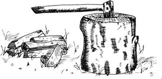

I was driving home yesterday when I spotted a guy unloading big, unsplit rounds of white pine from a pickup. Well, I had firewood on my mind anyway because I'd just buck sawed some small stuff for a friend in exchange for a haircut. And I knew she'd need better stove wood than the pitiful crooked sticks I'd cut. "Maybe," I thought, "I can trade this fellow some labor for a little wood."
So I pulled my van over to the curb and walked back to the pickup for some palaver. When I got there the man with the wood was standing on top of the load, tossing chunks of pine over the fence and into his yard. A yard that already contained, maybe, 20 cords of freshly cut firewood!
"Say, that's mighty impressive work," I said and my new found friend sat down, glad for the chance to rest and rap a spell. Well we talked about the coming winter it looked to be a long and a cold one, but then we say that every fall out here in western Nevada and we commiserated a bit over the Sierra Pacific Power Company's sure to come increases for the price of gas and we exchanged some thoughts about the cord and a half of wood my new acquaintance had already cut, carried, and trucked that day.
Before long I was allowing that the other fellow had invested considerable labor, emotional energy, and determination in his winter's fuel supply and I outlined a modest proposition: I'd help unload what was left on the truck in exchange for a single two foot section of tree trunk that I'd later present to my lady friend for a chopping block.
The man with the wood agreed and I was soon helping him manhandle big rounds some of them weighed 100 pounds or more from the pickup and into his yard. It was good to work together that way and we quickly established a special bond with each other.
Once we'd finished, we loaded my "pay" a single, straight cut block of pine into my van and I started on home. And as I drove along, I realized just how much I've been operating lately on a barter and swap basis.
"Instead of exchanging goods and services for scraps of paper with bank and government written all over them and then exchanging those pieces of paper for other goods and services," I thought, "we can get along quite nicely in a great number of cases just swapping nothing but goods and services and labor and skills themselves. And, in the process, share a bit of our lives with each other."
Now this idea seems to me, at least to be warmer, more personal, and human than the cash credit checks bills bank routine that now controls most of our lives. If I cut wood for a lady and she trims my hair, there's a piece of me in her warm house all week and I'm going to think kindly of her whenever I look into the mirror.
As long as people are locked into either the money economy or the I'll do it my own self with no help from anybody trip, they're missing a good deal I think of human values and the intangible benefits of non-competitive human intercourse.
So I'd kind of like to see a continuing feature on barters, swaps, and skill and labor exchanges in this magazine. Because I betcha that a series of articles on the subject would both make for good reading and spur everybody's creativity in the field. Maybe MOTHER could even swap subscriptions for contributions to the department. Well, I've had my say and I've tossed in my most recent bartering experiences. Now I intend to settle back and see what you have to offer in exchange.
OK, Bill you're on! I'll swap a one year subscription for every short (500 words or less) account of a successful barter, swap, and or exchange of labor or skills that is good enough to print and which I receive between now and the time I put the next issue to bed (January 18, I 976). And, if the response to this offer is heavy enough and the ideas sent in are good enough, I'll keep the department open from now on. MOTHER.
|
 |
|
|